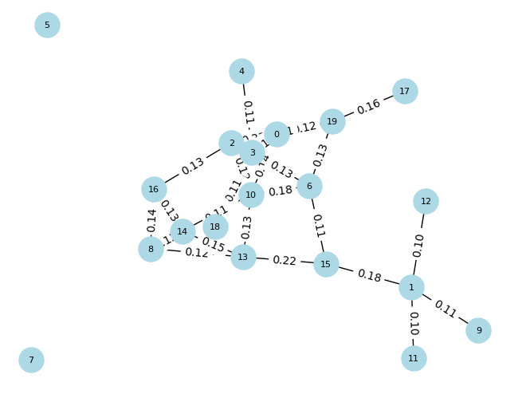

!pip install beautifulsoup4Requirement already satisfied: beautifulsoup4 in /usr/local/lib/python3.10/dist-packages (4.11.2)
Requirement already satisfied: soupsieve>1.2 in /usr/local/lib/python3.10/dist-packages (from beautifulsoup4) (2.5)!pip install beautifulsoup4Requirement already satisfied: beautifulsoup4 in /usr/local/lib/python3.10/dist-packages (4.11.2)
Requirement already satisfied: soupsieve>1.2 in /usr/local/lib/python3.10/dist-packages (from beautifulsoup4) (2.5)import requests
from bs4 import BeautifulSoup
from datetime import datetime
import csv
hades = {'user-agent': 'Mozilla/5.0 (Windows NT 10.0; Win64; x64) AppleWebKit/537.36 (KHTML, like Gecko) Chrome/106.0.0.0 Safari/537.36'}Pada proses crawling ini diambil berita melalui website detik.com dengan menggunakan kata kunci “Pemanasan Global”
def scrape_detik(hal, requests):
a = 1
# Membuka file CSV untuk menulis hasil scraping
with open('hasil_scraping.csv', 'w', newline='', encoding='utf-8') as csvfile:
fieldnames = ['Judul', 'Waktu', 'Link', 'Content']
writer = csv.DictWriter(csvfile, fieldnames=fieldnames)
# Menulis header ke dalam file CSV
writer.writeheader()
for page in range(1, hal):
url = f'https://www.detik.com/search/searchall?query=pemanasan+global&siteid=2{page}'
req = requests.get(url)
sop = BeautifulSoup(req.text, 'html.parser')
li = sop.find('div', class_='list media_rows list-berita')
lin = li.find_all('article')
for x in lin:
link = x.find('a')['href']
date = x.find('a').find('span', class_='date').text.replace('WIB','').replace('detikJatim','').split(',')[1]
headline = x.find('a').find('h2').text
ge_ = requests.get(link).text
sop_ = BeautifulSoup(ge_, 'html.parser')
content = sop_.find_all('div', class_='detail__body-text itp_bodycontent')
for cont in content:
paragraphs = cont.find_all('p')
content_ = ''.join([p.text for p in paragraphs]).replace('\n', '').replace('ADVERTISEMENT','').replace('SCROLL TO RESUME CONTENT','')
data = {
'Judul': headline,
'Waktu': date,
'Link': link,
'Content': content_
}
# Menulis data ke dalam file CSV
writer.writerow(data)
print("Data berhasil ditambahkan:", data)
print(f'done[{a}] > {headline}')
a += 1scrape_detik(3, requests)Data berhasil ditambahkan: {'Judul': 'Hampir 8.000 Pelari Meriahkan Lazada Run di ICE BSD, Ada dari Kenya', 'Waktu': ' 11 Jun 2023 11:58 ', 'Link': 'https://sport.detik.com/sport-lain/d-6766479/hampir-8-000-pelari-meriahkan-lazada-run-di-ice-bsd-ada-dari-kenya', 'Content': 'Sekitar 8.000 peserta meriahkan ajang lari yang digelar Lazada Indonesia bertajuk Lazada Run di ICE BSD, Kabupaten Tangerang. Para peserta lomba lari ini tak hanya dari dalam kota, tetapi juga datang dari luar kota bahkan luar negara, salah satunya, Kenya.Chief Marketing Officer Lazada Indonesia mengatakan untuk kategori kegiatan ini dibagi menjadi 5K, 10K, dan 21K. Semuanya terbuka untuk umum dan masyarakat."Pesertanya kita terbuka untuk semua. Mau yang sport enthusiast, professional runners, anak-anak, community running, atau yang memang ingin mendapatkan experience di Lazada Run," ujar Intan pada detikcom, Minggu (11/6/2023).\r\r\rSCROLL TO CONTINUE WITH CONTENT\rIntan melanjutkan kegiatan ini digelar untuk mendorong pola hidup sehat masyarakat. Karena mencakup semua masyarakat, kegiatan ini digelar ke beberapa kategori. Harapannya yang bisa sehat bukan hanya individual, tetapi juga keluarga di Indonesia."Kemudian kita ingin berkontribusi, terutama dari Kemenparekraf, kita ingin berkontribusi dalam bagian mendorong sport tourism di Indonesia," imbuhnya.Dia menambahkan, Lazada juga ingin memberikan bukan hanya pengalaman berbelanja online yang menyenangkan, tetapi juga memberikan sesuatu dalam hidup mereka. Salah satunya adalah melalui kegiatan Lazada Run."Kita ingin menambahkan sehat dalam hidup mereka." kata Intan.Selain itu, Deputi Bidang Produk Wisata dan Penyelenggara Kegiatan Kemenparekraf, Vinsensius Jemadu mengatakan pihaknya mengapresiasi dan berterima kasih atas kegiatan Lazada Run. Menurutnya kegiatan Lazada bisa ikut mendorong pariwisata di Indonesia. Sebab, baru pertama kali digelar kegiatan ini sudah diikuti hampir 8.000 peserta."Ini baru pertama kali sudah 8.000. Artinya apa? Kegiatan kedua, ketiga, nanti pasti akan naik," ucap Vinsensius.Melihat semangat dan antusias peserta yang luar biasa, dia pun meminta kepada pihak Lazada untuk menjadikan kegiatan Lazada Run sebagai salah satu kegiatan rutin yang dilakukan."Kami juga menantang Lazada untuk menggelar event naik kelas yang menjadi event global. Tentunya Kemenparekraf, khususnya bagian event akan siap mendukung. Kalau bisa suatu saat, maraton ini digelar di Danau Toba, atau di Labuan Bajo untuk bisa naik kelas," terangnya.Selain itu, antusiasme dan semangat bisa dilihat dari ramainya peserta yang memadati kawasan ICE BSD sejak pukul 4.30 pagi. Sebelum berlari sesuai kategori, para peserta juga diajak untuk melakukan pemanasan bersama Lazada.Salah satu peserta, Nunu dari Serpong pun mengatakan dirinya juga antusias mengikuti kegiatan ini. Bersama dengan 3 temannya, Nunu telah datang sejak pagi dan berhasil menyelesaikan maraton untuk kategori 5K."Saya suka lari, hobi. Terus Lazada Run disponsori produk bagus. Kegiatan ini seru, larinya disemangatin," ungkap Nunu.Selain Nunu, salah satu peserta yang semangat mengikuti kegiatan ini adalah Tata dari Jakarta. Bersama kedua temannya, dia mengikuti maraton dengan kategori"Ini acaranya rame banget, banyak teman-teman lari juga. Jadi sekalian latihan nanti ada half marathon jadi time trial aja sih," ungkap Tata.Tata menceritakan untuk mengikuti kegiatan lari seperti ini, dia bersama temannya juga terbiasa untuk latihan. Mereka juga bahkan memiliki pelatih dan menjaga pola makan tersendiri, salah satunya tidak makan gorengan. Selain itu, Tata dan temannya berharap kegiatan Lazada Run 2023 juga bisa terus digelar di tahun selanjutnya.Diketahui, kegiatan Lazada Run 2023 adalah salah satu kegiatan yang digelar oleh Lazada di 6 negara di Asia Tenggara. Setelah sebelumnya pertama kali digelar di Vietnam pada April 2023, kegiatan final Lazada Run bakal di Singapura pada Juli 2023 mendatang.'}
done[1] > Hampir 8.000 Pelari Meriahkan Lazada Run di ICE BSD, Ada dari Kenya
Data berhasil ditambahkan: {'Judul': 'Hari Lari Sedunia, 200 Pelari Ikut Fun Run Under Armour di Jakarta', 'Waktu': ' 01 Jun 2022 11:17 ', 'Link': 'https://sport.detik.com/sport-lain/d-6105077/hari-lari-sedunia-200-pelari-ikut-fun-run-under-armour-di-jakarta', 'Content': 'Brand apparel olahraga Under Armour mengadakan kompetisi lari \'All Out Mile\' dalam rangkap Hari Lari Sedunia. Kegiatan yang diadakan di Senayan, Jakarta, ini diikuti sebanyak 200 peserta, mulai dari orang dewasa hingga anak-anak. Under Armour juga mengundang 11 komunitas lari."Kita undang komunitas lari. Sebenarnya kita cuma memberikan slot (peserta) terbatas. Tapi ini acaranya super sukses karena ramai banget. Intinya kita undang semua masyarakat untuk ikut merayakan global running day," ujar Marketing Manager Under Armour Indonesia Ade Maharani saat ditemui di lokasi, Rabu (1/6/2022).Menurut Ade, kegiatan ini menjadi ajang untuk mengukur hasil latihan selama ini. Sekaligus sebagai pemanasan menghadapi challenge yang sesungguhnya. Dikatakannya, selama Fun Run 4K berlangsung peserta dibagi ke dalam beberapa grup, dan mereka bisa memilih kelompok yang sesuai dengan kecepatan masing-masing.\r\r\rSCROLL TO CONTINUE WITH CONTENT\r"Kita mendukung semua orang yang ingin bersenang-senang. Untuk membantu mempersiapkan diri juga sebelum ikut challenge, sudah berhasil atau belum dari hasil selama latihan," jelasnya.Untuk diketahui, All Out Mile merupakan sebuah kompetisi lari global yang berlangsung secara bersamaan di 14 negara. Adapun proses pendaftarannya sudah dibuka sejak 1 Mei 2022 lalu, sementara pelaksanaan window competition akan berlangsung mulai dari hari ini sampai 5 Juni 2022 mendatang. Agenda ini dikuti 400 peserta dari Eropa, Amerika Serikat, dan South Asia Pasific. Selama periode itu, peserta individu maupun secara kelompok ditantang untuk berlari sejauh 1 mil atau 1,6 Km. Hasil data berlari peserta secara otomatis akan ditarik dari aplikasi UA MapMyRunâ\x84¢ dan akan muncul di dalam situs FitRangkings dalam bentuk papan klasemen, di mana para peserta bisa melihat urutan/ranking masing-masing.Ade mengatakan tujuan utama event All Out Mile yaitu untuk mengajak masyarakat kembali berlari setelah 2 tahun terhalang oleh pandemi. Mengingat jaraknya yang hanya 1 mil atau 1,6 Km maka kegiatan ini cocok untuk diikuti oleh pemula."Kita juga mengajak masyarakat kembali ke realita, back to run. Jadi semacam reuni lagi. Apalagi sudah berapa tahun kita (dilanda) pandemi. Jadi rasanya ini waktu yang tepat untuk mendapatkan first 1 mile lagi setelah pandemi," tuturnya.Baca SelengkapnyaHalaman 1 2 Selanjutnya Simak Video "Jeon So Min Cabut dari Running Man"[Gambas:Video 20detik]olahraga lari running jogging under armour '}
done[2] > Hari Lari Sedunia, 200 Pelari Ikut Fun Run Under Armour di Jakarta
Data berhasil ditambahkan: {'Judul': 'PBSI Maklum Singapore Open Batal, tapi...', 'Waktu': ' 13 Mei 2021 15:25 ', 'Link': 'https://sport.detik.com/raket/d-5568632/pbsi-maklum-singapore-open-batal-tapi', 'Content': 'PP PBSI menilai wajar keputusan Badminton World Federation (BWF) yang membatalkan Singapore Open 2021, sekalipun merugikan salah satu atletnya.BWF secara resmi membatalkan turnamen BWF super 500 yang seharusnya bergulir 1-6 Juni mendatang. Kasus pandemi virus Corona yang meningkat secara global menjadi alasan mereka mengambil keputusan tersebut.Keputusan itu sudah diketahui PBSI. Melalui Kepala bidang Pembinaan Prestasi, Rionny Mainaky, induk federasi bulutangkis nasional itu memberikan responsnya. Seperti apa?\r\r\rSCROLL TO CONTINUE WITH CONTENT\r"Setelah turnamen Malaysia Open batal terselenggara, dari awal saya memprediksi Singapura juga akan batal, karena pandemi COVID-19. Apalagi melihat aturan pemerintah Singapura dan protokol kesehatannya yang ketat, sangat tidak memungkinkan bagi atlet untuk bisa tampil maksimal," kata Rionny dalam keterangan tertulisnya."Jadi saya kira wajar saja kalau BWF akhirnya membatalkannya. Pembatalan itu juga keputusan yang tepat walau sangat merugikan bagi pemain kita, terutama Hafiz Faizal/Gloria Emanuelle Widjaja yang tengah berjuang lolos Olimpiade Tokyo," dia menambahkan.Bagaimanapun, Hafiz/Gloria saat ini berada di peringkat sembilan dalam daftar kualifikasi Olimpiade. Berdasarkan regulasi (BWF), setiap negara bisa mengirimkan dua wakil jika kedua pasangan berada di top 8.Sedangkan, Singapore Open 2021 menjadi satu-satunya turnamen untuk bisa menyodok kembali peringkat mereka masuk ke delapan besar. Dengan catatan, hasil pertandingan mereka juga bagus."Sementara bagi atlet kita yang lain tidak ada ajang pemanasan sebelum tampil di Olimpiade nanti," ujar Rionny.Pelatih ganda campuran Richard Mainaky, juga mengungkapkan kekecewaannya. Dia menyayangkan karena atletnya tengah berjuang untuk lolos."Saya sangat menyayangkan karena dengan batalnya turnamen ini cukup merugikan posisi Hafiz/Gloria yang tengah berjuang mengamankan ranking untuk bisa tampil Olimpiade," katanya.Selain Singapore Open, sebelumnya Malaysia Open, India Open, German Open, dan Kejuaraan Asia juga mengalami penundaan lantaran wabah COVID-19. Seluruh turnamen tersebut merupakan kualifikasi untuk menambah poin Olimpiade 23 Juli-8 Agustus 2021.'}
done[3] > PBSI Maklum Singapore Open Batal, tapi...
Data berhasil ditambahkan: {'Judul': 'Kualifikasi Olimpiade Mulai 2021, Richard Mainaky: Tahun Ini Pemanasan', 'Waktu': ' 04 Jun 2020 14:29 ', 'Link': 'https://sport.detik.com/raket/d-5040253/kualifikasi-olimpiade-mulai-2021-richard-mainaky-tahun-ini-pemanasan', 'Content': 'Pelatih bulutangkis ganda campuran Richard Mainaky tak mempermasalahkan keputusan BWF mengaktifkan kembali perhitungan poin Olimpiade mulai tahun depan. Ia menyebut turnamen di tahun ini bisa buat pemanasan.Praveen Jordan Cs tercatat sudah lebih dari dua bulan tanpa turnamen. Kosongnya agenda pertandingan adalah imbas dari virus Corona yang terjadi secara global. Mereka pun hanya menjalani latihan tertutup dengan intensitas setengah porsi.Belakangan, BWF mengumumkan akan menggulirkan kompetisi mulai pertengahan Agustus. Hyderabad Open 2020 di India menjadi turnamen pembuka. Tapi turnamen-turnamen yang digelar tahun ini poinnya tidak masuk dalam kualifikasi Olimpiade Tokyo tahun depan.\r\r\rSCROLL TO CONTINUE WITH CONTENT\rRichard tidak masalah dengan keputusan BWF itu. Kakak kandung Rexy mainaky itu tetap melakukan persiapan untuk atletnya, sebagai pemanasan sebelum tancap gas menuju pertandingan yang lebih besar."Tahun ini sebenarnya masih belum jelas. Ada kemungkinan batal juga karena wabah ini kita tidak tahu sampai kapan (berakhirnya). Tapi kami tetap persiapkan. Jadi dari awal Juni itu saya bilang ke asisten pelatih, Nova (Widianto), ada program dan harus jalan," kata Richard kepada detikSport, Kamis (4/6/2020)."Akan tetapi latihan di masa pandemi ini latihan fisiknya tak bisa lama-lama karena terkait dengan kondisi imunitas atlet. Jadi saya bilang ke Nova untuk fokus ke individu saja. Seperti Melati (Daeva Oktavianti) perkuat defense-nya. Lalu Praveen fokus kebugaran fisik dan jaga berat badan, begitupun dengan Gloria defense-nya masih perlu diperkuat.""Kita memang tidak tahu seperti apa (kebijakan yang harus dilakukan) karena ada wabah ini, akan ada new normal segala. Tapi saya yakin step by step kami bisa atasi dan adaptasi. Jadi turnamen level 300 itu sebagai pemanasan menuju level 500 sampai 1000. Karena anak-anak butuh pertandingan setelah sekian lama vakum. Ya mudah-mudahan tidak ada pembatalan lagi. Supaya 2021 langsung tancap gas karena pas perhitungan kualifikasi Olimpiadenya," harap Richard.'}
done[4] > Kualifikasi Olimpiade Mulai 2021, Richard Mainaky: Tahun Ini Pemanasan
Data berhasil ditambahkan: {'Judul': 'Piala Thomas dan Uber 2020 Jadi Oktober, PBSI: Waktunya Ideal', 'Waktu': ' 29 Apr 2020 22:25 ', 'Link': 'https://sport.detik.com/raket/d-4996515/piala-thomas-dan-uber-2020-jadi-oktober-pbsi-waktunya-ideal', 'Content': 'PP PBSI merespons keputusan Badminton World Federation (BWF) memundurkan kembali jadwal Piala Thomas dan Uber 2020. Oktober disebut sebagai waktu yang ideal.Awalnya, Piala Thomas dan Uber akan bergulir 16-24 Mei 2020 di Aahur, Denmark. BWF kemudian menundanya ke 15-23 Agustus setelah wabah virus corona meluas secara global.Kini, BWF kembali menunda lagi-lagi imbas COVID-19. Pemerintah Denmark mengeluarkan kebijakan larangan berkegiatan dalam skala besar sampai Agustus, sehingga pelaksanaan turnamen beregu itu paling mungkin digelar 3-11 Oktober 2020.\r\r\rSCROLL TO CONTINUE WITH CONTENT\rSekretaris Jenderal PBSI Achmad Budiharto menyambut positif keputusan itu. Pasalnya, dia memprediksi bahwa virus Corona sudah mereda di bulan Agustus sehingga atletnya bisa melakukan persiapan normal."Kalau lihat perkiraan di Indonesia, puncak COVID-19 akan ada di bulan Mei, jadi Juli atau Agustus mudah-mudahan sudah bisa normal. Kalau perkiraan ini tepat, saya rasa Oktober ini waktu yang ideal," kata Budiharto dalam rilis yang diterima detikSport, Rabu (29/4/2020)."Artinya, kami punya waktu dua bulan (Agustus-September untuk mematangkan persiapan. Meskipun, semua sangat bergantung pada turnamen sebelumnya," ucapnya.Hal ini, sebut Budiharto, berkaitan penyusunan strategi persiapan atlet dan pemanasan Kevin Sanjaya dkk setelah lebih dari sebulan tanpa kompetisi.'}
done[5] > Piala Thomas dan Uber 2020 Jadi Oktober, PBSI: Waktunya Ideal
Data berhasil ditambahkan: {'Judul': 'Liga Equestrian Digelar Akhir Pekan Ini, Ada 1.000 Kursi Penonton Gratis', 'Waktu': ' 13 Des 2019 00:00 ', 'Link': 'https://sport.detik.com/sport-lain/d-4820926/liga-equestrian-digelar-akhir-pekan-ini-ada-1-000-kursi-penonton-gratis', 'Content': '\r\r\rSCROLL TO CONTINUE WITH CONTENT\r"Equinara Academy Pulomas selama sepekan ini juga tengah menyelenggarakan Coaching Clinic dengan salah satu Akademi Equestrian Terbaik di Dunia yang berpusat di Jerman yaitu Longines World Equestrian Academy. Hal ini akan terus lakukan sebagai komitmen Equinara dalam mencetak para atlit berprestasi," sambung Adinda.Jakarta International Equestrian Park Pulomas (JIEPP) merupakan salah satu destinasi wisata olah raga yang dimiliki PT. Pulomas Jaya dan dikelola oleh PT. Equinara Global Prima.Venue ini memiliki fasilitas equestrian terbaik di Asia Tenggara dengan lahan seluas 35-hektar, kapasitas 1000 kursi tribun, 162 kandang kuda, arena pemanasan kuda, arena latihan (indoor dan outdoor), arena Cross Country, Rumah Sakit Hewan 24 Jam, pusat peternakan kuda jenis premium, serta akses LRT dan Bus Trans Jakarta.'}
done[6] > Liga Equestrian Digelar Akhir Pekan Ini, Ada 1.000 Kursi Penonton Gratis
Data berhasil ditambahkan: {'Judul': 'Begini Cara Pegolf Lokal Cari Pengalaman', 'Waktu': ' 17 Des 2017 22:50 ', 'Link': 'https://sport.detik.com/sport-lain/d-3773992/begini-cara-pegolf-lokal-cari-pengalaman', 'Content': '\r\r\rSCROLL TO CONTINUE WITH CONTENT\r'}
done[7] > Begini Cara Pegolf Lokal Cari Pengalaman
Data berhasil ditambahkan: {'Judul': 'Yang Perlu Diperbaiki Agar INASGOC Lebih Siap di Asian Games 2018', 'Waktu': ' 28 Nov 2017 13:55 ', 'Link': 'https://sport.detik.com/sport-lain/d-3746594/yang-perlu-diperbaiki-agar-inasgoc-lebih-siap-di-asian-games-2018', 'Content': '\r\r\rSCROLL TO CONTINUE WITH CONTENT\r'}
done[8] > Yang Perlu Diperbaiki Agar INASGOC Lebih Siap di Asian Games 2018
Data berhasil ditambahkan: {'Judul': 'Pembukaan Olimpiade Rio: Tampilkan Favela dan Ajakan Hijaukan Hutan', 'Waktu': ' 06 Agu 2016 11:20 ', 'Link': 'https://sport.detik.com/sport-lain/d-3269718/pembukaan-olimpiade-rio-tampilkan-favela-dan-ajakan-hijaukan-hutan', 'Content': 'Awesome ð\x9f\x98\x8d #OpeningCeremony #Rio2016 #olympics pic.twitter.com/OvMzvY14q0\r\r\rSCROLL TO CONTINUE WITH CONTENT\rMetropolis ð\x9f\x8f¢ #OpeningCeremony #olympics pic.twitter.com/824pqCIcEW'}
done[9] > Pembukaan Olimpiade Rio: Tampilkan Favela dan Ajakan Hijaukan Hutanimport pandas as pd
df = pd.read_csv('/content/hasil_scraping.csv')
df| Judul | Waktu | Link | Content | |
|---|---|---|---|---|
| 0 | Hampir 8.000 Pelari Meriahkan Lazada Run di IC... | 11 Jun 2023 11:58 | https://sport.detik.com/sport-lain/d-6766479/h... | Sekitar 8.000 peserta meriahkan ajang lari yan... |
| 1 | Hari Lari Sedunia, 200 Pelari Ikut Fun Run Und... | 01 Jun 2022 11:17 | https://sport.detik.com/sport-lain/d-6105077/h... | Brand apparel olahraga Under Armour mengadakan... |
| 2 | PBSI Maklum Singapore Open Batal, tapi... | 13 Mei 2021 15:25 | https://sport.detik.com/raket/d-5568632/pbsi-m... | PP PBSI menilai wajar keputusan Badminton Worl... |
| 3 | Kualifikasi Olimpiade Mulai 2021, Richard Main... | 04 Jun 2020 14:29 | https://sport.detik.com/raket/d-5040253/kualif... | Pelatih bulutangkis ganda campuran Richard Mai... |
| 4 | Piala Thomas dan Uber 2020 Jadi Oktober, PBSI:... | 29 Apr 2020 22:25 | https://sport.detik.com/raket/d-4996515/piala-... | PP PBSI merespons keputusan Badminton World Fe... |
| 5 | Liga Equestrian Digelar Akhir Pekan Ini, Ada 1... | 13 Des 2019 00:00 | https://sport.detik.com/sport-lain/d-4820926/l... | \r\r\rSCROLL TO CONTINUE WITH CONTENT\r"Equina... |
| 6 | Begini Cara Pegolf Lokal Cari Pengalaman | 17 Des 2017 22:50 | https://sport.detik.com/sport-lain/d-3773992/b... | \r\r\rSCROLL TO CONTINUE WITH CONTENT\r |
| 7 | Yang Perlu Diperbaiki Agar INASGOC Lebih Siap ... | 28 Nov 2017 13:55 | https://sport.detik.com/sport-lain/d-3746594/y... | \r\r\rSCROLL TO CONTINUE WITH CONTENT\r |
| 8 | Pembukaan Olimpiade Rio: Tampilkan Favela dan ... | 06 Agu 2016 11:20 | https://sport.detik.com/sport-lain/d-3269718/p... | Awesome � #OpeningCeremony #Rio2016 #olympi... |
%%capture
!pip install nltk
!pip install Sastrawiimport pandas as pd
import re
import nltk
import numpy as np
from nltk.corpus import stopwords
from nltk.tokenize import word_tokenize
from nltk.tokenize import RegexpTokenizer
# tokenizer = RegexpTokenizer(r'\w+')
from Sastrawi.Stemmer.StemmerFactory import StemmerFactory
from sklearn.feature_extraction.text import CountVectorizer
from sklearn.feature_extraction.text import TfidfVectorizer,CountVectorizer
from sklearn.preprocessing import OneHotEncodernltk.download("punkt")
nltk.download("stopwords")[nltk_data] Downloading package punkt to /root/nltk_data...
[nltk_data] Unzipping tokenizers/punkt.zip.
[nltk_data] Downloading package stopwords to /root/nltk_data...
[nltk_data] Unzipping corpora/stopwords.zip.Truedf = df.astype(str)
df["Content"] = df["Content"].apply(lambda x: x.lower())
content_column = df["Content"]
konten = pd.DataFrame(content_column, columns=['Content'])
konten| Content | |
|---|---|
| 0 | sekitar 8.000 peserta meriahkan ajang lari yan... |
| 1 | brand apparel olahraga under armour mengadakan... |
| 2 | pp pbsi menilai wajar keputusan badminton worl... |
| 3 | pelatih bulutangkis ganda campuran richard mai... |
| 4 | pp pbsi merespons keputusan badminton world fe... |
| 5 | \r\r\rscroll to continue with content\r"equina... |
| 6 | \r\r\rscroll to continue with content\r |
| 7 | \r\r\rscroll to continue with content\r |
| 8 | awesome � #openingceremony #rio2016 #olympi... |
import pandas as pd
# Ambil satu dokumen dari baris pertama
dokumen_pertama = df.at[0, 'Content']
# Buat DataFrame dengan satu kolom dan satu baris
df_dokumen = pd.DataFrame({'Dokumen1': [dokumen_pertama]})
# Tampilkan DataFrame
df_dokumen
| Dokumen1 | |
|---|---|
| 0 | sekitar 8.000 peserta meriahkan ajang lari yan... |
Pada proses ekstraksi kalimat dilakukan tokenisasi kalimat yang ada di dalam dokumen berita
from nltk.tokenize import sent_tokenize
# Misalnya, jika df adalah DataFrame yang memiliki kolom 'Content'
teks_berita = df_dokumen['Dokumen1'].values.tolist()
kalimat = []
for teks in teks_berita:
kalimat.extend(sent_tokenize(teks))
df_kalimat = pd.DataFrame(kalimat, columns=['Tokenisasi'])
df_kalimat| Tokenisasi | |
|---|---|
| 0 | sekitar 8.000 peserta meriahkan ajang lari yan... |
| 1 | para peserta lomba lari ini tak hanya dari dal... |
| 2 | semuanya terbuka untuk umum dan masyarakat. |
| 3 | "pesertanya kita terbuka untuk semua. |
| 4 | mau yang sport enthusiast, professional runner... |
| 5 | scroll to continue with content\rintan melanju... |
| 6 | karena mencakup semua masyarakat, kegiatan ini... |
| 7 | harapannya yang bisa sehat bukan hanya individ... |
| 8 | "kemudian kita ingin berkontribusi, terutama d... |
| 9 | salah satunya adalah melalui kegiatan lazada run. |
| 10 | "kita ingin menambahkan sehat dalam hidup mere... |
| 11 | kata intan.selain itu, deputi bidang produk wi... |
| 12 | menurutnya kegiatan lazada bisa ikut mendorong... |
| 13 | sebab, baru pertama kali digelar kegiatan ini ... |
| 14 | "ini baru pertama kali sudah 8.000. artinya apa? |
| 15 | kegiatan kedua, ketiga, nanti pasti akan naik,... |
| 16 | "kami juga menantang lazada untuk menggelar ev... |
| 17 | tentunya kemenparekraf, khususnya bagian event... |
| 18 | kalau bisa suatu saat, maraton ini digelar di ... |
| 19 | sebelum berlari sesuai kategori, para peserta ... |
| 20 | bersama dengan 3 temannya, nunu telah datang s... |
| 21 | "saya suka lari, hobi. |
| 22 | terus lazada run disponsori produk bagus. |
| 23 | kegiatan ini seru, larinya disemangatin," ungk... |
| 24 | bersama kedua temannya, dia mengikuti maraton ... |
| 25 | jadi sekalian latihan nanti ada half marathon ... |
| 26 | mereka juga bahkan memiliki pelatih dan menjag... |
| 27 | selain itu, tata dan temannya berharap kegiata... |
| 28 | setelah sebelumnya pertama kali digelar di vie... |
import pandas as pd
from nltk.tokenize import sent_tokenize
from nltk.corpus import stopwords
import string
# Misalnya, jika df adalah DataFrame yang memiliki kolom 'Content'
teks_berita = df_dokumen['Dokumen1'].values.tolist()
kalimat = []
for teks in teks_berita:
# Tokenisasi
kalimat.extend(sent_tokenize(teks))
# Membuang kata-kata atau tanda baca yang tidak penting
stopwords_list = set(stopwords.words('english'))
cleaned_sentences = []
for sentence in kalimat:
# Menghapus tanda baca
sentence = sentence.translate(str.maketrans("", "", string.punctuation))
# Menghapus angka
sentence = ''.join([char for char in sentence if not char.isdigit()])
# Mengubah teks menjadi huruf kecil
sentence = sentence.lower()
# Membuang kata-kata yang merupakan stopwords
words = sentence.split()
words = [word for word in words if word not in stopwords_list]
# Menggabungkan kata-kata kembali menjadi kalimat
cleaned_sentence = " ".join(words)
cleaned_sentences.append(cleaned_sentence)
# Membuat DataFrame baru
df_cleaned1 = pd.DataFrame(cleaned_sentences, columns=['Tokenisasi Dokumen1'])
df_cleaned1| Tokenisasi Dokumen1 | |
|---|---|
| 0 | sekitar peserta meriahkan ajang lari yang dige... |
| 1 | para peserta lomba lari ini tak hanya dari dal... |
| 2 | semuanya terbuka untuk umum dan masyarakat |
| 3 | pesertanya kita terbuka untuk semua |
| 4 | mau yang sport enthusiast professional runners... |
| 5 | scroll continue content intan melanjutkan kegi... |
| 6 | karena mencakup semua masyarakat kegiatan ini ... |
| 7 | harapannya yang bisa sehat bukan hanya individ... |
| 8 | kemudian kita ingin berkontribusi terutama dar... |
| 9 | salah satunya adalah melalui kegiatan lazada run |
| 10 | kita ingin menambahkan sehat dalam hidup mereka |
| 11 | kata intanselain itu deputi bidang produk wisa... |
| 12 | menurutnya kegiatan lazada bisa ikut mendorong... |
| 13 | sebab baru pertama kali digelar kegiatan ini s... |
| 14 | ini baru pertama kali sudah artinya apa |
| 15 | kegiatan kedua ketiga nanti pasti akan naik uc... |
| 16 | kami juga menantang lazada untuk menggelar eve... |
| 17 | tentunya kemenparekraf khususnya bagian event ... |
| 18 | kalau bisa suatu saat maraton ini digelar di d... |
| 19 | sebelum berlari sesuai kategori para peserta j... |
| 20 | bersama dengan temannya nunu telah datang seja... |
| 21 | saya suka lari hobi |
| 22 | terus lazada run disponsori produk bagus |
| 23 | kegiatan ini seru larinya disemangatin ungkap ... |
| 24 | bersama kedua temannya dia mengikuti maraton d... |
| 25 | jadi sekalian latihan nanti ada half marathon ... |
| 26 | mereka juga bahkan memiliki pelatih dan menjag... |
| 27 | selain itu tata dan temannya berharap kegiatan... |
| 28 | setelah sebelumnya pertama kali digelar di vie... |
Proses TF-IDF ini digunakan untuk mengetahui seberapa sering suatu kata muncul didalam dokumen. Berikut rumus perhitungan TF-IDF
\[ \begin{gathered} w_{i j}=t f_{i j} x i d f_j \\ w_{i j}=t f_{i j} x \log \left(D / d f_j\right) \end{gathered} \]
Dimana Wij merupakan bobot dari term(j) terhadapn dokumen(i). Sedangkan tfij merupakan jumlah kemunculan term(j) dalam dokumen(i). Untuk D sendiri merupakan jumlah semua dokumen yang ada pada data dan dfj merupakan jumlah dokumen yang mengandung term(j)
from sklearn.feature_extraction.text import TfidfVectorizer
import pandas as pd
# Data kalimat (contoh)
kalimat = df_cleaned1['Tokenisasi Dokumen1']
# Membuat objek TfidfVectorizer
tfidf_vectorizer = TfidfVectorizer()
# Menghitung TF-IDF
tfidf_matrix = tfidf_vectorizer.fit_transform(kalimat)
# Mengonversi matriks TF-IDF ke DataFrame Pandas
tfidf_kata1 = pd.DataFrame(tfidf_matrix.toarray(), columns=tfidf_vectorizer.get_feature_names_out())
# Menampilkan tabel TF-IDF
tfidf_kata1| acaranya | ada | adalah | aja | ajang | akan | anakanak | antusias | antusiasme | apa | ... | ucap | ujar | umum | ungkap | untuk | vietnam | vinsensius | vinsensiusmelihat | wisata | yang | |
|---|---|---|---|---|---|---|---|---|---|---|---|---|---|---|---|---|---|---|---|---|---|
| 0 | 0.000000 | 0.00000 | 0.000000 | 0.00000 | 0.29658 | 0.000000 | 0.000000 | 0.000000 | 0.00000 | 0.000000 | ... | 0.000000 | 0.000000 | 0.000000 | 0.00000 | 0.000000 | 0.000000 | 0.000000 | 0.000000 | 0.000000 | 0.167853 |
| 1 | 0.000000 | 0.00000 | 0.000000 | 0.00000 | 0.00000 | 0.000000 | 0.000000 | 0.000000 | 0.00000 | 0.000000 | ... | 0.000000 | 0.000000 | 0.000000 | 0.00000 | 0.102965 | 0.000000 | 0.000000 | 0.000000 | 0.000000 | 0.000000 |
| 2 | 0.000000 | 0.00000 | 0.000000 | 0.00000 | 0.00000 | 0.000000 | 0.000000 | 0.000000 | 0.00000 | 0.000000 | ... | 0.000000 | 0.000000 | 0.493895 | 0.00000 | 0.266830 | 0.000000 | 0.000000 | 0.000000 | 0.000000 | 0.000000 |
| 3 | 0.000000 | 0.00000 | 0.000000 | 0.00000 | 0.00000 | 0.000000 | 0.000000 | 0.000000 | 0.00000 | 0.000000 | ... | 0.000000 | 0.000000 | 0.000000 | 0.00000 | 0.287165 | 0.000000 | 0.000000 | 0.000000 | 0.000000 | 0.000000 |
| 4 | 0.000000 | 0.00000 | 0.000000 | 0.00000 | 0.00000 | 0.000000 | 0.229011 | 0.000000 | 0.00000 | 0.000000 | ... | 0.000000 | 0.229011 | 0.000000 | 0.00000 | 0.000000 | 0.000000 | 0.000000 | 0.000000 | 0.000000 | 0.259223 |
| 5 | 0.000000 | 0.00000 | 0.000000 | 0.00000 | 0.00000 | 0.000000 | 0.000000 | 0.000000 | 0.00000 | 0.000000 | ... | 0.000000 | 0.000000 | 0.000000 | 0.00000 | 0.175644 | 0.000000 | 0.000000 | 0.000000 | 0.000000 | 0.000000 |
| 6 | 0.000000 | 0.00000 | 0.000000 | 0.00000 | 0.00000 | 0.000000 | 0.000000 | 0.000000 | 0.00000 | 0.000000 | ... | 0.000000 | 0.000000 | 0.000000 | 0.00000 | 0.000000 | 0.000000 | 0.000000 | 0.000000 | 0.000000 | 0.000000 |
| 7 | 0.000000 | 0.00000 | 0.000000 | 0.00000 | 0.00000 | 0.000000 | 0.000000 | 0.000000 | 0.00000 | 0.000000 | ... | 0.000000 | 0.000000 | 0.000000 | 0.00000 | 0.000000 | 0.000000 | 0.000000 | 0.000000 | 0.000000 | 0.202226 |
| 8 | 0.000000 | 0.00000 | 0.000000 | 0.00000 | 0.00000 | 0.000000 | 0.000000 | 0.000000 | 0.00000 | 0.000000 | ... | 0.000000 | 0.000000 | 0.000000 | 0.00000 | 0.000000 | 0.000000 | 0.000000 | 0.000000 | 0.000000 | 0.091132 |
| 9 | 0.000000 | 0.00000 | 0.429424 | 0.00000 | 0.00000 | 0.000000 | 0.000000 | 0.000000 | 0.00000 | 0.000000 | ... | 0.000000 | 0.000000 | 0.000000 | 0.00000 | 0.000000 | 0.000000 | 0.000000 | 0.000000 | 0.000000 | 0.000000 |
| 10 | 0.000000 | 0.00000 | 0.000000 | 0.00000 | 0.00000 | 0.000000 | 0.000000 | 0.000000 | 0.00000 | 0.000000 | ... | 0.000000 | 0.000000 | 0.000000 | 0.00000 | 0.000000 | 0.000000 | 0.000000 | 0.000000 | 0.000000 | 0.000000 |
| 11 | 0.000000 | 0.00000 | 0.000000 | 0.00000 | 0.00000 | 0.000000 | 0.000000 | 0.000000 | 0.00000 | 0.000000 | ... | 0.000000 | 0.000000 | 0.000000 | 0.00000 | 0.000000 | 0.000000 | 0.231301 | 0.000000 | 0.231301 | 0.000000 |
| 12 | 0.000000 | 0.00000 | 0.000000 | 0.00000 | 0.00000 | 0.000000 | 0.000000 | 0.000000 | 0.00000 | 0.000000 | ... | 0.000000 | 0.000000 | 0.000000 | 0.00000 | 0.000000 | 0.000000 | 0.000000 | 0.000000 | 0.000000 | 0.000000 |
| 13 | 0.000000 | 0.00000 | 0.000000 | 0.00000 | 0.00000 | 0.000000 | 0.000000 | 0.000000 | 0.00000 | 0.000000 | ... | 0.000000 | 0.000000 | 0.000000 | 0.00000 | 0.000000 | 0.000000 | 0.000000 | 0.000000 | 0.000000 | 0.000000 |
| 14 | 0.000000 | 0.00000 | 0.000000 | 0.00000 | 0.00000 | 0.000000 | 0.000000 | 0.000000 | 0.00000 | 0.437311 | ... | 0.000000 | 0.000000 | 0.000000 | 0.00000 | 0.000000 | 0.000000 | 0.000000 | 0.000000 | 0.000000 | 0.000000 |
| 15 | 0.000000 | 0.00000 | 0.000000 | 0.00000 | 0.00000 | 0.176607 | 0.000000 | 0.176607 | 0.00000 | 0.000000 | ... | 0.198289 | 0.000000 | 0.000000 | 0.00000 | 0.107127 | 0.000000 | 0.000000 | 0.198289 | 0.000000 | 0.224448 |
| 16 | 0.000000 | 0.00000 | 0.000000 | 0.00000 | 0.00000 | 0.000000 | 0.000000 | 0.000000 | 0.00000 | 0.000000 | ... | 0.000000 | 0.000000 | 0.000000 | 0.00000 | 0.165951 | 0.000000 | 0.000000 | 0.000000 | 0.000000 | 0.173847 |
| 17 | 0.000000 | 0.00000 | 0.000000 | 0.00000 | 0.00000 | 0.335657 | 0.000000 | 0.000000 | 0.00000 | 0.000000 | ... | 0.000000 | 0.000000 | 0.000000 | 0.00000 | 0.000000 | 0.000000 | 0.000000 | 0.000000 | 0.000000 | 0.000000 |
| 18 | 0.000000 | 0.00000 | 0.000000 | 0.00000 | 0.00000 | 0.000000 | 0.000000 | 0.000000 | 0.18112 | 0.000000 | ... | 0.000000 | 0.000000 | 0.000000 | 0.00000 | 0.097851 | 0.000000 | 0.000000 | 0.000000 | 0.000000 | 0.102507 |
| 19 | 0.000000 | 0.00000 | 0.000000 | 0.00000 | 0.00000 | 0.000000 | 0.000000 | 0.203517 | 0.00000 | 0.000000 | ... | 0.000000 | 0.000000 | 0.000000 | 0.00000 | 0.123451 | 0.000000 | 0.000000 | 0.000000 | 0.000000 | 0.000000 |
| 20 | 0.000000 | 0.00000 | 0.000000 | 0.00000 | 0.00000 | 0.000000 | 0.000000 | 0.000000 | 0.00000 | 0.000000 | ... | 0.000000 | 0.000000 | 0.000000 | 0.00000 | 0.172220 | 0.000000 | 0.000000 | 0.000000 | 0.000000 | 0.000000 |
| 21 | 0.000000 | 0.00000 | 0.000000 | 0.00000 | 0.00000 | 0.000000 | 0.000000 | 0.000000 | 0.00000 | 0.000000 | ... | 0.000000 | 0.000000 | 0.000000 | 0.00000 | 0.000000 | 0.000000 | 0.000000 | 0.000000 | 0.000000 | 0.000000 |
| 22 | 0.000000 | 0.00000 | 0.000000 | 0.00000 | 0.00000 | 0.000000 | 0.000000 | 0.000000 | 0.00000 | 0.000000 | ... | 0.000000 | 0.000000 | 0.000000 | 0.00000 | 0.000000 | 0.000000 | 0.000000 | 0.000000 | 0.000000 | 0.000000 |
| 23 | 0.000000 | 0.00000 | 0.221011 | 0.00000 | 0.00000 | 0.000000 | 0.000000 | 0.000000 | 0.00000 | 0.000000 | ... | 0.000000 | 0.000000 | 0.000000 | 0.24210 | 0.000000 | 0.000000 | 0.000000 | 0.000000 | 0.000000 | 0.153841 |
| 24 | 0.295853 | 0.00000 | 0.000000 | 0.00000 | 0.00000 | 0.000000 | 0.000000 | 0.000000 | 0.00000 | 0.000000 | ... | 0.000000 | 0.000000 | 0.000000 | 0.00000 | 0.000000 | 0.000000 | 0.000000 | 0.000000 | 0.000000 | 0.000000 |
| 25 | 0.000000 | 0.19434 | 0.000000 | 0.19434 | 0.00000 | 0.000000 | 0.000000 | 0.000000 | 0.00000 | 0.000000 | ... | 0.000000 | 0.000000 | 0.000000 | 0.17309 | 0.209988 | 0.000000 | 0.000000 | 0.000000 | 0.000000 | 0.000000 |
| 26 | 0.000000 | 0.00000 | 0.000000 | 0.00000 | 0.00000 | 0.000000 | 0.000000 | 0.000000 | 0.00000 | 0.000000 | ... | 0.000000 | 0.000000 | 0.000000 | 0.00000 | 0.000000 | 0.000000 | 0.000000 | 0.000000 | 0.000000 | 0.000000 |
| 27 | 0.000000 | 0.00000 | 0.165160 | 0.00000 | 0.00000 | 0.000000 | 0.000000 | 0.000000 | 0.00000 | 0.000000 | ... | 0.000000 | 0.000000 | 0.000000 | 0.00000 | 0.000000 | 0.000000 | 0.000000 | 0.000000 | 0.000000 | 0.114964 |
| 28 | 0.000000 | 0.00000 | 0.000000 | 0.00000 | 0.00000 | 0.000000 | 0.000000 | 0.000000 | 0.00000 | 0.000000 | ... | 0.000000 | 0.000000 | 0.000000 | 0.00000 | 0.000000 | 0.249031 | 0.000000 | 0.000000 | 0.000000 | 0.000000 |
29 rows × 249 columns
Proses ini digunakan untuk mengukur jarak kedekatan antar dokumen dan diperoleh rumus sebagai berikut.
\[ \cos \theta=\frac{a \cdot b}{\|a\| \cdot\|b\|} \]
from sklearn.metrics.pairwise import cosine_similarity
# Menghitung kesamaan kosinus antara kalimat-kalimat
cosine_sim_matrix = cosine_similarity(tfidf_matrix, tfidf_matrix)
# Menampilkan matriks kesamaan kosinus
cosine_sim_df1 = pd.DataFrame(cosine_sim_matrix, columns=df_cleaned1.index, index=df_cleaned1.index)
cosine_sim_df1| 0 | 1 | 2 | 3 | 4 | 5 | 6 | 7 | 8 | 9 | ... | 19 | 20 | 21 | 22 | 23 | 24 | 25 | 26 | 27 | 28 | |
|---|---|---|---|---|---|---|---|---|---|---|---|---|---|---|---|---|---|---|---|---|---|
| 0 | 1.000000 | 0.105866 | 0.000000 | 0.000000 | 0.124813 | 0.037802 | 0.044076 | 0.123862 | 0.079240 | 0.132162 | ... | 0.053138 | 0.000000 | 0.078561 | 0.122321 | 0.057429 | 0.043453 | 0.028543 | 0.000000 | 0.261593 | 0.143458 |
| 1 | 0.105866 | 1.000000 | 0.060728 | 0.029568 | 0.010703 | 0.071772 | 0.103548 | 0.145574 | 0.153927 | 0.158091 | ... | 0.243644 | 0.121827 | 0.050484 | 0.022846 | 0.184108 | 0.045984 | 0.083919 | 0.130624 | 0.128471 | 0.022357 |
| 2 | 0.000000 | 0.060728 | 1.000000 | 0.284872 | 0.000000 | 0.153018 | 0.123767 | 0.000000 | 0.000000 | 0.000000 | ... | 0.032940 | 0.101574 | 0.000000 | 0.000000 | 0.000000 | 0.000000 | 0.056031 | 0.046598 | 0.035443 | 0.000000 |
| 3 | 0.000000 | 0.029568 | 0.284872 | 1.000000 | 0.000000 | 0.050439 | 0.159831 | 0.000000 | 0.113162 | 0.000000 | ... | 0.035451 | 0.049455 | 0.000000 | 0.000000 | 0.000000 | 0.000000 | 0.060301 | 0.000000 | 0.000000 | 0.000000 |
| 4 | 0.124813 | 0.010703 | 0.000000 | 0.000000 | 1.000000 | 0.059062 | 0.000000 | 0.081330 | 0.148080 | 0.072391 | ... | 0.000000 | 0.000000 | 0.000000 | 0.067001 | 0.039879 | 0.000000 | 0.000000 | 0.000000 | 0.146197 | 0.164911 |
| 5 | 0.037802 | 0.071772 | 0.153018 | 0.050439 | 0.059062 | 1.000000 | 0.197093 | 0.076796 | 0.069215 | 0.038778 | ... | 0.062256 | 0.030249 | 0.000000 | 0.000000 | 0.096529 | 0.000000 | 0.071390 | 0.068875 | 0.096525 | 0.050026 |
| 6 | 0.044076 | 0.103548 | 0.123767 | 0.159831 | 0.000000 | 0.197093 | 1.000000 | 0.000000 | 0.000000 | 0.045213 | ... | 0.096405 | 0.068495 | 0.000000 | 0.000000 | 0.112548 | 0.000000 | 0.040233 | 0.000000 | 0.112543 | 0.058328 |
| 7 | 0.123862 | 0.145574 | 0.000000 | 0.000000 | 0.081330 | 0.076796 | 0.000000 | 1.000000 | 0.225818 | 0.000000 | ... | 0.052305 | 0.000000 | 0.000000 | 0.000000 | 0.031111 | 0.033861 | 0.022243 | 0.030566 | 0.164565 | 0.062872 |
| 8 | 0.079240 | 0.153927 | 0.000000 | 0.113162 | 0.148080 | 0.069215 | 0.000000 | 0.225818 | 1.000000 | 0.020855 | ... | 0.065363 | 0.000000 | 0.000000 | 0.019302 | 0.035695 | 0.030519 | 0.020047 | 0.055977 | 0.090160 | 0.038166 |
| 9 | 0.132162 | 0.158091 | 0.000000 | 0.000000 | 0.072391 | 0.038778 | 0.045213 | 0.000000 | 0.020855 | 1.000000 | ... | 0.027255 | 0.000000 | 0.000000 | 0.154519 | 0.222695 | 0.000000 | 0.023180 | 0.155088 | 0.345377 | 0.108423 |
| 10 | 0.000000 | 0.057750 | 0.000000 | 0.161062 | 0.069394 | 0.197027 | 0.000000 | 0.108271 | 0.497674 | 0.000000 | ... | 0.000000 | 0.000000 | 0.000000 | 0.000000 | 0.000000 | 0.000000 | 0.000000 | 0.080924 | 0.000000 | 0.000000 |
| 11 | 0.057880 | 0.091010 | 0.080717 | 0.000000 | 0.031703 | 0.033965 | 0.039602 | 0.000000 | 0.033755 | 0.128292 | ... | 0.058812 | 0.052097 | 0.000000 | 0.157361 | 0.056795 | 0.000000 | 0.020303 | 0.043646 | 0.195686 | 0.060492 |
| 12 | 0.168602 | 0.078189 | 0.000000 | 0.000000 | 0.058194 | 0.122424 | 0.036346 | 0.214717 | 0.119969 | 0.105630 | ... | 0.021910 | 0.000000 | 0.000000 | 0.050895 | 0.052126 | 0.000000 | 0.018634 | 0.000000 | 0.262171 | 0.124512 |
| 13 | 0.086432 | 0.089147 | 0.000000 | 0.000000 | 0.000000 | 0.113368 | 0.132182 | 0.000000 | 0.000000 | 0.044331 | ... | 0.112976 | 0.000000 | 0.000000 | 0.000000 | 0.149962 | 0.000000 | 0.039449 | 0.000000 | 0.110349 | 0.179568 |
| 14 | 0.000000 | 0.053393 | 0.000000 | 0.000000 | 0.000000 | 0.045540 | 0.053098 | 0.000000 | 0.000000 | 0.000000 | ... | 0.032008 | 0.000000 | 0.000000 | 0.000000 | 0.076152 | 0.000000 | 0.027222 | 0.000000 | 0.000000 | 0.143989 |
| 15 | 0.139192 | 0.159860 | 0.063183 | 0.030763 | 0.096497 | 0.062492 | 0.050924 | 0.045389 | 0.036114 | 0.205231 | ... | 0.177018 | 0.040780 | 0.000000 | 0.081782 | 0.218511 | 0.085318 | 0.104647 | 0.041926 | 0.250116 | 0.075119 |
| 16 | 0.073862 | 0.096634 | 0.044281 | 0.047655 | 0.062316 | 0.029148 | 0.000000 | 0.070313 | 0.059658 | 0.039784 | ... | 0.065452 | 0.028580 | 0.000000 | 0.036822 | 0.026745 | 0.029109 | 0.053969 | 0.026277 | 0.085876 | 0.018759 |
| 17 | 0.000000 | 0.000000 | 0.000000 | 0.000000 | 0.000000 | 0.000000 | 0.000000 | 0.000000 | 0.088255 | 0.000000 | ... | 0.000000 | 0.000000 | 0.000000 | 0.000000 | 0.000000 | 0.000000 | 0.000000 | 0.000000 | 0.000000 | 0.000000 |
| 18 | 0.182502 | 0.092105 | 0.057712 | 0.028099 | 0.088783 | 0.059134 | 0.048908 | 0.176509 | 0.044391 | 0.000000 | ... | 0.078283 | 0.167017 | 0.000000 | 0.000000 | 0.123539 | 0.035424 | 0.031822 | 0.017088 | 0.218502 | 0.081422 |
| 19 | 0.053138 | 0.243644 | 0.032940 | 0.035451 | 0.000000 | 0.062256 | 0.096405 | 0.052305 | 0.065363 | 0.027255 | ... | 1.000000 | 0.151993 | 0.000000 | 0.000000 | 0.258785 | 0.119950 | 0.128969 | 0.039094 | 0.087493 | 0.012851 |
| 20 | 0.000000 | 0.121827 | 0.101574 | 0.049455 | 0.000000 | 0.030249 | 0.068495 | 0.000000 | 0.000000 | 0.000000 | ... | 0.151993 | 1.000000 | 0.000000 | 0.000000 | 0.057283 | 0.244078 | 0.106397 | 0.030076 | 0.059581 | 0.000000 |
| 21 | 0.078561 | 0.050484 | 0.000000 | 0.000000 | 0.000000 | 0.000000 | 0.000000 | 0.000000 | 0.000000 | 0.000000 | ... | 0.000000 | 0.000000 | 1.000000 | 0.000000 | 0.000000 | 0.078369 | 0.051479 | 0.000000 | 0.000000 | 0.000000 |
| 22 | 0.122321 | 0.022846 | 0.000000 | 0.000000 | 0.067001 | 0.000000 | 0.000000 | 0.000000 | 0.019302 | 0.154519 | ... | 0.000000 | 0.000000 | 0.000000 | 1.000000 | 0.000000 | 0.000000 | 0.000000 | 0.000000 | 0.221975 | 0.072858 |
| 23 | 0.057429 | 0.184108 | 0.000000 | 0.000000 | 0.039879 | 0.096529 | 0.112548 | 0.031111 | 0.035695 | 0.222695 | ... | 0.258785 | 0.057283 | 0.000000 | 0.000000 | 1.000000 | 0.045586 | 0.129551 | 0.031828 | 0.228314 | 0.030574 |
| 24 | 0.043453 | 0.045984 | 0.000000 | 0.000000 | 0.000000 | 0.000000 | 0.000000 | 0.033861 | 0.030519 | 0.000000 | ... | 0.119950 | 0.244078 | 0.078369 | 0.000000 | 0.045586 | 1.000000 | 0.182674 | 0.025308 | 0.053315 | 0.000000 |
| 25 | 0.028543 | 0.083919 | 0.056031 | 0.060301 | 0.000000 | 0.071390 | 0.040233 | 0.022243 | 0.020047 | 0.023180 | ... | 0.128969 | 0.106397 | 0.051479 | 0.000000 | 0.129551 | 0.182674 | 1.000000 | 0.016625 | 0.061767 | 0.010930 |
| 26 | 0.000000 | 0.130624 | 0.046598 | 0.000000 | 0.000000 | 0.068875 | 0.000000 | 0.030566 | 0.055977 | 0.155088 | ... | 0.039094 | 0.030076 | 0.000000 | 0.000000 | 0.031828 | 0.025308 | 0.016625 | 1.000000 | 0.060327 | 0.000000 |
| 27 | 0.261593 | 0.128471 | 0.035443 | 0.000000 | 0.146197 | 0.096525 | 0.112543 | 0.164565 | 0.090160 | 0.345377 | ... | 0.087493 | 0.059581 | 0.000000 | 0.221975 | 0.228314 | 0.053315 | 0.061767 | 0.060327 | 1.000000 | 0.254121 |
| 28 | 0.143458 | 0.022357 | 0.000000 | 0.000000 | 0.164911 | 0.050026 | 0.058328 | 0.062872 | 0.038166 | 0.108423 | ... | 0.012851 | 0.000000 | 0.000000 | 0.072858 | 0.030574 | 0.000000 | 0.010930 | 0.000000 | 0.254121 | 1.000000 |
29 rows × 29 columns
Kata Penting pada setiap Kalimat berdasarkan nilai TF-IDF pada Dokumen Berita 1
# Menampilkan kata-kata dengan nilai TF-IDF tertinggi untuk setiap dokumen
for i, row in tfidf_kata1.iterrows():
print(f"Kata-kata penting dalam Ringkasan Berita pada Kalimat {i + 1}:")
top_keywords = row.sort_values(ascending=False).head(5) # Ganti 5 dengan jumlah kata-kata penting yang diinginkan
print(top_keywords)
print("\n")Kata-kata penting dalam Ringkasan Berita pada Kalimat 1:
ajang 0.29658
tangerang 0.29658
bertajuk 0.29658
kabupaten 0.29658
meriahkan 0.29658
Name: 0, dtype: float64
Kata-kata penting dalam Ringkasan Berita pada Kalimat 2:
kota 0.381169
luar 0.339489
dari 0.268237
ini 0.215727
officer 0.190584
Name: 1, dtype: float64
Kata-kata penting dalam Ringkasan Berita pada Kalimat 3:
semuanya 0.493895
umum 0.493895
terbuka 0.439889
masyarakat 0.401571
dan 0.293559
Name: 2, dtype: float64
Kata-kata penting dalam Ringkasan Berita pada Kalimat 4:
pesertanya 0.531533
terbuka 0.473411
semua 0.473411
kita 0.432173
untuk 0.287165
Name: 3, dtype: float64
Kata-kata penting dalam Ringkasan Berita pada Kalimat 5:
yang 0.259223
enthusiast 0.229011
community 0.229011
memang 0.229011
running 0.229011
Name: 4, dtype: float64
Kata-kata penting dalam Ringkasan Berita pada Kalimat 6:
content 0.325112
continue 0.325112
melanjutkan 0.325112
scroll 0.325112
pola 0.289562
Name: 5, dtype: float64
Kata-kata penting dalam Ringkasan Berita pada Kalimat 7:
ke 0.379066
beberapa 0.379066
mencakup 0.379066
karena 0.379066
semua 0.337616
Name: 6, dtype: float64
Kata-kata penting dalam Ringkasan Berita pada Kalimat 8:
harapannya 0.357314
individual 0.357314
keluarga 0.357314
bukan 0.318243
tetapi 0.290521
Name: 7, dtype: float64
Kata-kata penting dalam Ringkasan Berita pada Kalimat 9:
ingin 0.392765
memberikan 0.322043
berkontribusi 0.322043
dalam 0.261843
kita 0.261843
Name: 8, dtype: float64
Kata-kata penting dalam Ringkasan Berita pada Kalimat 10:
melalui 0.528151
adalah 0.429424
satunya 0.429424
salah 0.349716
run 0.313920
Name: 9, dtype: float64
Kata-kata penting dalam Ringkasan Berita pada Kalimat 11:
menambahkan 0.408240
ingin 0.372679
hidup 0.372679
mereka 0.372679
dalam 0.372679
Name: 10, dtype: float64
Kata-kata penting dalam Ringkasan Berita pada Kalimat 12:
dan 0.274960
jemadu 0.231301
intanselain 0.231301
wisata 0.231301
vinsensius 0.231301
Name: 11, dtype: float64
Kata-kata penting dalam Ringkasan Berita pada Kalimat 13:
menurutnya 0.424572
pariwisata 0.424572
ikut 0.424572
mendorong 0.345207
bisa 0.319657
Name: 12, dtype: float64
Kata-kata penting dalam Ringkasan Berita pada Kalimat 14:
hampir 0.371674
sebab 0.371674
diikuti 0.371674
sudah 0.331033
baru 0.331033
Name: 13, dtype: float64
Kata-kata penting dalam Ringkasan Berita pada Kalimat 15:
apa 0.437311
artinya 0.437311
baru 0.389492
sudah 0.389492
kali 0.355564
Name: 14, dtype: float64
Kata-kata penting dalam Ringkasan Berita pada Kalimat 16:
kegiatan 0.282693
yang 0.224448
ucap 0.198289
menjadikan 0.198289
ketiga 0.198289
Name: 15, dtype: float64
Kata-kata penting dalam Ringkasan Berita pada Kalimat 17:
event 0.547165
global 0.307171
menantang 0.307171
menggelar 0.307171
kami 0.307171
Name: 16, dtype: float64
Kata-kata penting dalam Ringkasan Berita pada Kalimat 18:
mendukung 0.376866
khususnya 0.376866
siap 0.376866
tentunya 0.376866
akan 0.335657
Name: 17, dtype: float64
Kata-kata penting dalam Ringkasan Berita pada Kalimat 19:
bisa 0.409091
di 0.215306
dilihat 0.181120
saat 0.181120
suatu 0.181120
Name: 18, dtype: float64
Kata-kata penting dalam Ringkasan Berita pada Kalimat 20:
peserta 0.286150
juga 0.258648
dirinya 0.228503
melakukan 0.228503
berlari 0.228503
Name: 19, dtype: float64
Kata-kata penting dalam Ringkasan Berita pada Kalimat 21:
berhasil 0.318774
telah 0.318774
menyelesaikan 0.318774
pagi 0.283917
datang 0.283917
Name: 20, dtype: float64
Kata-kata penting dalam Ringkasan Berita pada Kalimat 22:
suka 0.534887
saya 0.534887
hobi 0.534887
lari 0.376412
pasti 0.000000
Name: 21, dtype: float64
Kata-kata penting dalam Ringkasan Berita pada Kalimat 23:
bagus 0.488822
disponsori 0.488822
produk 0.435370
terus 0.435370
run 0.290543
Name: 22, dtype: float64
Kata-kata penting dalam Ringkasan Berita pada Kalimat 24:
ini 0.307682
larinya 0.271823
jakarta 0.271823
disemangatin 0.271823
seru 0.271823
Name: 23, dtype: float64
Kata-kata penting dalam Ringkasan Berita pada Kalimat 25:
acaranya 0.295853
banget 0.295853
kategoriini 0.295853
temanteman 0.295853
banyak 0.295853
Name: 24, dtype: float64
Kata-kata penting dalam Ringkasan Berita pada Kalimat 26:
jadi 0.388681
latihan 0.388681
untuk 0.209988
half 0.194340
time 0.194340
Name: 25, dtype: float64
Kata-kata penting dalam Ringkasan Berita pada Kalimat 27:
makan 0.534127
tidak 0.267064
memiliki 0.267064
gorengan 0.267064
tersendiri 0.267064
Name: 26, dtype: float64
Kata-kata penting dalam Ringkasan Berita pada Kalimat 28:
di 0.362208
lazada 0.301775
kegiatan 0.289596
digelar 0.254377
run 0.241472
Name: 27, dtype: float64
Kata-kata penting dalam Ringkasan Berita pada Kalimat 29:
pada 0.443601
di 0.296036
bakal 0.249031
singapura 0.249031
setelah 0.249031
Name: 28, dtype: float64
Grap disini dibuat untuk menggambarkan nilai jarak antara kata satu dengan kata yang lain berdasarkan nilai Cosinuss Similarity dari Dokumen berita 1
import networkx as nx
import matplotlib.pyplot as plt
# Membuat grafik jaringan
G = nx.Graph()
# Menambahkan simpul (kalimat)
for i in range(len(cosine_sim_matrix)):
G.add_node(i, label=df_cleaned1.index[i]) # Menggunakan label kalimat
# Menambahkan tepian (hubungan) berdasarkan kesamaan kosinus
for i in range(len(cosine_sim_matrix)):
for j in range(i+1, len(cosine_sim_matrix)):
similarity = cosine_sim_matrix[i][j]
if similarity > 0.1: # Atur threshold sesuai kebutuhan
G.add_edge(i, j, weight=similarity)
# Menggambar grafik jaringan
pos = nx.spring_layout(G, seed=42) # Menggunakan layout spring
labels = nx.get_node_attributes(G, 'label')
nx.draw(G, pos, with_labels=True, node_color='lightblue', node_size=500, font_size=8, font_color='black')
nx.draw_networkx_edge_labels(G, pos, edge_labels={(i, j): f"{similarity:.2f}" for i, j, similarity in G.edges(data='weight')})
plt.show()
Pada proses ini Closeness Centrality digunakan untuk menghitung bobot sebuah node berdasarkan jumlah jarak terpendek antara node(i) dengan node lainnya. Berikut rumus Closeness Centrality
\[ C_c(i)=\frac{n-1}{\sum_{j=1}^n d(i, j)} \]
import networkx as nx
closeness_centrality = nx.closeness_centrality(G)
sorted_closeness = sorted(closeness_centrality.items(), key=lambda x: x[1], reverse=True)
for node, closeness in sorted_closeness:
print(f"Simpul {node}: Closeness Centrality = {closeness:.4f}")Simpul 6: Closeness Centrality = 0.4346
Simpul 15: Closeness Centrality = 0.4111
Simpul 10: Closeness Centrality = 0.3900
Simpul 3: Closeness Centrality = 0.3803
Simpul 2: Closeness Centrality = 0.3710
Simpul 13: Closeness Centrality = 0.3710
Simpul 19: Closeness Centrality = 0.3622
Simpul 0: Closeness Centrality = 0.3537
Simpul 14: Closeness Centrality = 0.3380
Simpul 1: Closeness Centrality = 0.3236
Simpul 16: Closeness Centrality = 0.3236
Simpul 8: Closeness Centrality = 0.3169
Simpul 4: Closeness Centrality = 0.2716
Simpul 18: Closeness Centrality = 0.2716
Simpul 17: Closeness Centrality = 0.2623
Simpul 9: Closeness Centrality = 0.2414
Simpul 11: Closeness Centrality = 0.2414
Simpul 12: Closeness Centrality = 0.2414
Simpul 5: Closeness Centrality = 0.0000
Simpul 7: Closeness Centrality = 0.0000G = nx.DiGraph(nx.path_graph(4))
pr = nx.pagerank(G, alpha=0.9)
pr{0: 0.1724140124772394,
1: 0.3275859875227606,
2: 0.3275859875227606,
3: 0.1724140124772394}EigenVector digunakan untuk menghitung sentralitas sebuah node dengan menambahkan sentralitas pendahulunya. Berikut nilai persamaan dari EigenVector
\[ \lambda x_i=\sum_{j \rightarrow i} x_j \]
G = nx.path_graph(4)
centrality = nx.eigenvector_centrality(G)
sorted((v, f"{c:0.2f}") for v, c in centrality.items())[(0, '0.37'), (1, '0.60'), (2, '0.60'), (3, '0.37')]Tampilan Kalimat penting berdasarkan nilai EigenVector pada Dokumen Berita 1
import networkx as nx
# Membuat grafik jaringan (contoh: grafik jalur)
G = nx.path_graph(4)
# Menghitung eigenvector centrality
centrality = nx.eigenvector_centrality(G)
# Data berita (dalam bentuk daftar)
berita =df_cleaned1['Tokenisasi Dokumen1']
# Menampilkan kalimat dari eigenvector centrality dan mengaitkannya dengan dokumen berita
for node, centrality_score in centrality.items():
if 0 <= node < len(berita):
kalimat = f"Kalimat berita1: '{berita[node]}' memiliki Eigenvector Centrality sebesar {centrality_score:.2f}"
print(kalimat)Kalimat berita1: 'sekitar peserta meriahkan ajang lari yang digelar lazada indonesia bertajuk lazada run di ice bsd kabupaten tangerang' memiliki Eigenvector Centrality sebesar 0.37
Kalimat berita1: 'para peserta lomba lari ini tak hanya dari dalam kota tetapi juga datang dari luar kota bahkan luar negara salah satunya kenyachief marketing officer lazada indonesia mengatakan untuk kategori kegiatan ini dibagi menjadi k k dan k' memiliki Eigenvector Centrality sebesar 0.60
Kalimat berita1: 'semuanya terbuka untuk umum dan masyarakat' memiliki Eigenvector Centrality sebesar 0.60
Kalimat berita1: 'pesertanya kita terbuka untuk semua' memiliki Eigenvector Centrality sebesar 0.37import pandas as pd
# Ambil satu dokumen dari baris pertama
dokumen_pertama = df.at[1, 'Content']
# Buat DataFrame dengan satu kolom dan satu baris
df_dokumen2 = pd.DataFrame({'Dokumen2': [dokumen_pertama]})
# Tampilkan DataFrame
df_dokumen2| Dokumen2 | |
|---|---|
| 0 | brand apparel olahraga under armour mengadakan... |
from nltk.tokenize import sent_tokenize
# Misalnya, jika df adalah DataFrame yang memiliki kolom 'Content'
teks_berita = df_dokumen2['Dokumen2'].values.tolist()
kalimat = []
for teks in teks_berita:
kalimat.extend(sent_tokenize(teks))
df_kalimat2 = pd.DataFrame(kalimat, columns=['Tokenisasi'])
df_kalimat2| Tokenisasi | |
|---|---|
| 0 | brand apparel olahraga under armour mengadakan... |
| 1 | kegiatan yang diadakan di senayan, jakarta, in... |
| 2 | under armour juga mengundang 11 komunitas lari. |
| 3 | "kita undang komunitas lari. |
| 4 | sebenarnya kita cuma memberikan slot (peserta)... |
| 5 | tapi ini acaranya super sukses karena ramai ba... |
| 6 | intinya kita undang semua masyarakat untuk iku... |
| 7 | sekaligus sebagai pemanasan menghadapi challen... |
| 8 | dikatakannya, selama fun run 4k berlangsung pe... |
| 9 | scroll to continue with content\r"kita menduku... |
| 10 | untuk membantu mempersiapkan diri juga sebelum... |
| 11 | adapun proses pendaftarannya sudah dibuka seja... |
| 12 | agenda ini dikuti 400 peserta dari eropa, amer... |
| 13 | selama periode itu, peserta individu maupun se... |
| 14 | hasil data berlari peserta secara otomatis aka... |
| 15 | mengingat jaraknya yang hanya 1 mil atau 1,6 k... |
| 16 | "kita juga mengajak masyarakat kembali ke real... |
| 17 | jadi semacam reuni lagi. |
| 18 | apalagi sudah berapa tahun kita (dilanda) pand... |
| 19 | jadi rasanya ini waktu yang tepat untuk mendap... |
import pandas as pd
from nltk.tokenize import sent_tokenize
from nltk.corpus import stopwords
import string
# Misalnya, jika df adalah DataFrame yang memiliki kolom 'Content'
teks_berita = df_dokumen2['Dokumen2'].values.tolist()
kalimat = []
for teks in teks_berita:
# Tokenisasi
kalimat.extend(sent_tokenize(teks))
# Membuang kata-kata atau tanda baca yang tidak penting
stopwords_list = set(stopwords.words('english'))
cleaned_sentences = []
for sentence in kalimat:
# Menghapus tanda baca
sentence = sentence.translate(str.maketrans("", "", string.punctuation))
# Menghapus angka
sentence = ''.join([char for char in sentence if not char.isdigit()])
# Mengubah teks menjadi huruf kecil
sentence = sentence.lower()
# Membuang kata-kata yang merupakan stopwords
words = sentence.split()
words = [word for word in words if word not in stopwords_list]
# Menggabungkan kata-kata kembali menjadi kalimat
cleaned_sentence = " ".join(words)
cleaned_sentences.append(cleaned_sentence)
# Membuat DataFrame baru
df_cleaned2 = pd.DataFrame(cleaned_sentences, columns=['Tokenisasi Dokumen2'])
df_cleaned2| Tokenisasi Dokumen2 | |
|---|---|
| 0 | brand apparel olahraga armour mengadakan kompe... |
| 1 | kegiatan yang diadakan di senayan jakarta ini ... |
| 2 | armour juga mengundang komunitas lari |
| 3 | kita undang komunitas lari |
| 4 | sebenarnya kita cuma memberikan slot peserta t... |
| 5 | tapi ini acaranya super sukses karena ramai ba... |
| 6 | intinya kita undang semua masyarakat untuk iku... |
| 7 | sekaligus sebagai pemanasan menghadapi challen... |
| 8 | dikatakannya selama fun run k berlangsung pese... |
| 9 | scroll continue content kita mendukung semua o... |
| 10 | untuk membantu mempersiapkan diri juga sebelum... |
| 11 | adapun proses pendaftarannya sudah dibuka seja... |
| 12 | agenda ini dikuti peserta dari eropa amerika s... |
| 13 | selama periode itu peserta individu maupun sec... |
| 14 | hasil data berlari peserta secara otomatis aka... |
| 15 | mengingat jaraknya yang hanya mil atau km maka... |
| 16 | kita juga mengajak masyarakat kembali ke reali... |
| 17 | jadi semacam reuni lagi |
| 18 | apalagi sudah berapa tahun kita dilanda pandemi |
| 19 | jadi rasanya ini waktu yang tepat untuk mendap... |
from sklearn.feature_extraction.text import TfidfVectorizer
import pandas as pd
# Data kalimat (contoh)
kalimat = df_cleaned2['Tokenisasi Dokumen2']
# Membuat objek TfidfVectorizer
tfidf_vectorizer = TfidfVectorizer()
# Menghitung TF-IDF
tfidf_matrix = tfidf_vectorizer.fit_transform(kalimat)
# Mengonversi matriks TF-IDF ke DataFrame Pandas
tfidf_kata2 = pd.DataFrame(tfidf_matrix.toarray(), columns=tfidf_vectorizer.get_feature_names_out())
# Menampilkan tabel TF-IDF
tfidf_kata2| acaranya | adapun | ade | agenda | ajang | akan | amerika | anakanak | apalagi | aplikasi | ... | ujar | undang | untuk | urutanranking | utama | video | waktu | window | yaitu | yang | |
|---|---|---|---|---|---|---|---|---|---|---|---|---|---|---|---|---|---|---|---|---|---|
| 0 | 0.000000 | 0.000000 | 0.000000 | 0.000000 | 0.000000 | 0.000000 | 0.000000 | 0.000000 | 0.000000 | 0.000000 | ... | 0.000000 | 0.000000 | 0.000000 | 0.000000 | 0.000000 | 0.000000 | 0.000000 | 0.000000 | 0.000000 | 0.000000 |
| 1 | 0.000000 | 0.000000 | 0.000000 | 0.000000 | 0.000000 | 0.000000 | 0.000000 | 0.289316 | 0.000000 | 0.000000 | ... | 0.000000 | 0.000000 | 0.000000 | 0.000000 | 0.000000 | 0.000000 | 0.000000 | 0.000000 | 0.000000 | 0.169640 |
| 2 | 0.000000 | 0.000000 | 0.000000 | 0.000000 | 0.000000 | 0.000000 | 0.000000 | 0.000000 | 0.000000 | 0.000000 | ... | 0.000000 | 0.000000 | 0.000000 | 0.000000 | 0.000000 | 0.000000 | 0.000000 | 0.000000 | 0.000000 | 0.000000 |
| 3 | 0.000000 | 0.000000 | 0.000000 | 0.000000 | 0.000000 | 0.000000 | 0.000000 | 0.000000 | 0.000000 | 0.000000 | ... | 0.000000 | 0.568672 | 0.000000 | 0.000000 | 0.000000 | 0.000000 | 0.000000 | 0.000000 | 0.000000 | 0.000000 |
| 4 | 0.000000 | 0.000000 | 0.000000 | 0.000000 | 0.000000 | 0.000000 | 0.000000 | 0.000000 | 0.000000 | 0.000000 | ... | 0.000000 | 0.000000 | 0.000000 | 0.000000 | 0.000000 | 0.000000 | 0.000000 | 0.000000 | 0.000000 | 0.000000 |
| 5 | 0.369011 | 0.000000 | 0.000000 | 0.000000 | 0.000000 | 0.000000 | 0.000000 | 0.000000 | 0.000000 | 0.000000 | ... | 0.000000 | 0.000000 | 0.000000 | 0.000000 | 0.000000 | 0.000000 | 0.000000 | 0.000000 | 0.000000 | 0.000000 |
| 6 | 0.000000 | 0.000000 | 0.356671 | 0.000000 | 0.178336 | 0.000000 | 0.000000 | 0.000000 | 0.000000 | 0.000000 | ... | 0.178336 | 0.156760 | 0.223345 | 0.000000 | 0.000000 | 0.000000 | 0.000000 | 0.000000 | 0.000000 | 0.000000 |
| 7 | 0.000000 | 0.000000 | 0.000000 | 0.000000 | 0.000000 | 0.000000 | 0.000000 | 0.000000 | 0.000000 | 0.000000 | ... | 0.000000 | 0.000000 | 0.000000 | 0.000000 | 0.000000 | 0.000000 | 0.000000 | 0.000000 | 0.000000 | 0.237086 |
| 8 | 0.000000 | 0.000000 | 0.000000 | 0.000000 | 0.000000 | 0.000000 | 0.000000 | 0.000000 | 0.000000 | 0.000000 | ... | 0.000000 | 0.000000 | 0.000000 | 0.000000 | 0.000000 | 0.000000 | 0.000000 | 0.000000 | 0.000000 | 0.141210 |
| 9 | 0.000000 | 0.000000 | 0.000000 | 0.000000 | 0.000000 | 0.000000 | 0.000000 | 0.000000 | 0.000000 | 0.000000 | ... | 0.000000 | 0.000000 | 0.000000 | 0.000000 | 0.000000 | 0.000000 | 0.000000 | 0.000000 | 0.000000 | 0.203755 |
| 10 | 0.000000 | 0.000000 | 0.000000 | 0.000000 | 0.000000 | 0.000000 | 0.000000 | 0.000000 | 0.000000 | 0.000000 | ... | 0.000000 | 0.000000 | 0.131137 | 0.000000 | 0.000000 | 0.000000 | 0.000000 | 0.000000 | 0.000000 | 0.122793 |
| 11 | 0.000000 | 0.233685 | 0.000000 | 0.000000 | 0.000000 | 0.205412 | 0.000000 | 0.000000 | 0.000000 | 0.000000 | ... | 0.000000 | 0.000000 | 0.000000 | 0.000000 | 0.000000 | 0.000000 | 0.000000 | 0.233685 | 0.000000 | 0.000000 |
| 12 | 0.000000 | 0.000000 | 0.000000 | 0.320139 | 0.000000 | 0.000000 | 0.320139 | 0.000000 | 0.000000 | 0.000000 | ... | 0.000000 | 0.000000 | 0.000000 | 0.000000 | 0.000000 | 0.000000 | 0.000000 | 0.000000 | 0.000000 | 0.000000 |
| 13 | 0.000000 | 0.000000 | 0.000000 | 0.000000 | 0.000000 | 0.000000 | 0.000000 | 0.000000 | 0.000000 | 0.000000 | ... | 0.000000 | 0.000000 | 0.183375 | 0.000000 | 0.000000 | 0.000000 | 0.000000 | 0.000000 | 0.000000 | 0.000000 |
| 14 | 0.000000 | 0.000000 | 0.000000 | 0.000000 | 0.000000 | 0.263623 | 0.000000 | 0.000000 | 0.000000 | 0.149954 | ... | 0.000000 | 0.000000 | 0.093900 | 0.149954 | 0.149954 | 0.000000 | 0.000000 | 0.000000 | 0.149954 | 0.000000 |
| 15 | 0.000000 | 0.000000 | 0.000000 | 0.000000 | 0.000000 | 0.000000 | 0.000000 | 0.000000 | 0.000000 | 0.000000 | ... | 0.000000 | 0.000000 | 0.185230 | 0.000000 | 0.000000 | 0.000000 | 0.000000 | 0.000000 | 0.000000 | 0.173444 |
| 16 | 0.000000 | 0.000000 | 0.000000 | 0.000000 | 0.000000 | 0.000000 | 0.000000 | 0.000000 | 0.000000 | 0.000000 | ... | 0.000000 | 0.000000 | 0.000000 | 0.000000 | 0.000000 | 0.000000 | 0.000000 | 0.000000 | 0.000000 | 0.000000 |
| 17 | 0.000000 | 0.000000 | 0.000000 | 0.000000 | 0.000000 | 0.000000 | 0.000000 | 0.000000 | 0.000000 | 0.000000 | ... | 0.000000 | 0.000000 | 0.000000 | 0.000000 | 0.000000 | 0.000000 | 0.000000 | 0.000000 | 0.000000 | 0.000000 |
| 18 | 0.000000 | 0.000000 | 0.000000 | 0.000000 | 0.000000 | 0.000000 | 0.000000 | 0.000000 | 0.429416 | 0.000000 | ... | 0.000000 | 0.000000 | 0.000000 | 0.000000 | 0.000000 | 0.000000 | 0.000000 | 0.000000 | 0.000000 | 0.000000 |
| 19 | 0.000000 | 0.000000 | 0.000000 | 0.000000 | 0.000000 | 0.000000 | 0.000000 | 0.000000 | 0.000000 | 0.000000 | ... | 0.000000 | 0.000000 | 0.125195 | 0.000000 | 0.000000 | 0.199931 | 0.199931 | 0.000000 | 0.000000 | 0.117229 |
20 rows × 207 columns
# Menampilkan kata-kata dengan nilai TF-IDF tertinggi untuk setiap dokumen
for i, row in tfidf_kata2.iterrows():
print(f"Kata-kata penting dalam Dokumen Berita 2 pada Kalimat {i + 1}:")
top_keywords = row.sort_values(ascending=False).head(5) # Ganti 5 dengan jumlah kata-kata penting yang diinginkan
print(top_keywords)
print("\n")Kata-kata penting dalam Dokumen Berita 2 pada Kalimat 1:
lari 0.404653
olahraga 0.300996
rangkap 0.300996
brand 0.300996
sedunia 0.300996
Name: 0, dtype: float64
Kata-kata penting dalam Dokumen Berita 2 pada Kalimat 2:
senayan 0.289316
jakarta 0.289316
dewasa 0.289316
anakanak 0.289316
sebanyak 0.289316
Name: 1, dtype: float64
Kata-kata penting dalam Dokumen Berita 2 pada Kalimat 3:
mengundang 0.543802
komunitas 0.478010
juga 0.431330
armour 0.395122
lari 0.365538
Name: 2, dtype: float64
Kata-kata penting dalam Dokumen Berita 2 pada Kalimat 4:
komunitas 0.568672
undang 0.568672
lari 0.434868
kita 0.405111
acaranya 0.000000
Name: 3, dtype: float64
Kata-kata penting dalam Dokumen Berita 2 pada Kalimat 5:
cuma 0.415793
memberikan 0.415793
slot 0.415793
sebenarnya 0.415793
terbatas 0.415793
Name: 4, dtype: float64
Kata-kata penting dalam Dokumen Berita 2 pada Kalimat 6:
acaranya 0.369011
banget 0.369011
sukses 0.369011
super 0.369011
tapi 0.369011
Name: 5, dtype: float64
Kata-kata penting dalam Dokumen Berita 2 pada Kalimat 7:
ade 0.356671
untuk 0.223345
ini 0.209134
marketing 0.178336
ditemui 0.178336
Name: 6, dtype: float64
Kata-kata penting dalam Dokumen Berita 2 pada Kalimat 8:
sesungguhnya 0.404343
menghadapi 0.404343
sebagai 0.404343
pemanasan 0.404343
sekaligus 0.404343
Name: 7, dtype: float64
Kata-kata penting dalam Dokumen Berita 2 pada Kalimat 9:
memilih 0.240828
grup 0.240828
sesuai 0.240828
beberapa 0.240828
dengan 0.240828
Name: 8, dtype: float64
Kata-kata penting dalam Dokumen Berita 2 pada Kalimat 10:
content 0.347498
continue 0.347498
scroll 0.347498
bersenangsenang 0.347498
mendukung 0.347498
Name: 9, dtype: float64
Kata-kata penting dalam Dokumen Berita 2 pada Kalimat 11:
negara 0.209419
belum 0.209419
membantu 0.209419
bersamaan 0.209419
mempersiapkan 0.209419
Name: 10, dtype: float64
Kata-kata penting dalam Dokumen Berita 2 pada Kalimat 12:
mei 0.233685
mendatang 0.233685
competition 0.233685
sejak 0.233685
dibuka 0.233685
Name: 11, dtype: float64
Kata-kata penting dalam Dokumen Berita 2 pada Kalimat 13:
serikat 0.320139
amerika 0.320139
asia 0.320139
dikuti 0.320139
south 0.320139
Name: 12, dtype: float64
Kata-kata penting dalam Dokumen Berita 2 pada Kalimat 14:
sejauh 0.29284
itu 0.29284
maupun 0.29284
ditantang 0.29284
periode 0.29284
Name: 13, dtype: float64
Kata-kata penting dalam Dokumen Berita 2 pada Kalimat 15:
akan 0.263623
berlari 0.263623
dalam 0.237879
di 0.217911
peserta 0.187800
Name: 14, dtype: float64
Kata-kata penting dalam Dokumen Berita 2 pada Kalimat 16:
mengingat 0.295803
pemula 0.295803
cocok 0.295803
jaraknya 0.295803
hanya 0.295803
Name: 15, dtype: float64
Kata-kata penting dalam Dokumen Berita 2 pada Kalimat 17:
realita 0.385156
back 0.385156
kembali 0.338558
run 0.338558
ke 0.338558
Name: 16, dtype: float64
Kata-kata penting dalam Dokumen Berita 2 pada Kalimat 18:
reuni 0.531094
semacam 0.531094
jadi 0.466840
lagi 0.466840
para 0.000000
Name: 17, dtype: float64
Kata-kata penting dalam Dokumen Berita 2 pada Kalimat 19:
dilanda 0.429416
apalagi 0.429416
berapa 0.429416
tahun 0.377464
sudah 0.340602
Name: 18, dtype: float64
Kata-kata penting dalam Dokumen Berita 2 pada Kalimat 20:
running 0.351484
jogging 0.199931
selengkapnyahalaman 0.199931
selanjutnya 0.199931
detikolahraga 0.199931
Name: 19, dtype: float64
from sklearn.metrics.pairwise import cosine_similarity
# Menghitung kesamaan kosinus antara kalimat-kalimat
cosine_sim_matrix2 = cosine_similarity(tfidf_matrix, tfidf_matrix)
# Menampilkan matriks kesamaan kosinus
cosine_sim_df2 = pd.DataFrame(cosine_sim_matrix2, columns=df_cleaned2.index, index=df_cleaned2.index)
cosine_sim_df2| 0 | 1 | 2 | 3 | 4 | 5 | 6 | 7 | 8 | 9 | 10 | 11 | 12 | 13 | 14 | 15 | 16 | 17 | 18 | 19 | |
|---|---|---|---|---|---|---|---|---|---|---|---|---|---|---|---|---|---|---|---|---|
| 0 | 1.000000 | 0.000000 | 0.234330 | 0.175971 | 0.000000 | 0.000000 | 0.028339 | 0.000000 | 0.045604 | 0.000000 | 0.138945 | 0.054348 | 0.000000 | 0.000000 | 0.080621 | 0.000000 | 0.000000 | 0.000000 | 0.000000 | 0.117923 |
| 1 | 0.000000 | 1.000000 | 0.000000 | 0.000000 | 0.047170 | 0.036705 | 0.095177 | 0.040219 | 0.051276 | 0.112246 | 0.076575 | 0.101994 | 0.104481 | 0.033222 | 0.096843 | 0.178812 | 0.000000 | 0.000000 | 0.000000 | 0.062455 |
| 2 | 0.234330 | 0.000000 | 1.000000 | 0.430792 | 0.000000 | 0.000000 | 0.051199 | 0.000000 | 0.000000 | 0.000000 | 0.123103 | 0.000000 | 0.000000 | 0.000000 | 0.000000 | 0.000000 | 0.131770 | 0.000000 | 0.000000 | 0.106524 |
| 3 | 0.175971 | 0.000000 | 0.430792 | 1.000000 | 0.105478 | 0.000000 | 0.134385 | 0.000000 | 0.000000 | 0.088153 | 0.061216 | 0.000000 | 0.000000 | 0.000000 | 0.000000 | 0.000000 | 0.097706 | 0.000000 | 0.108934 | 0.058443 |
| 4 | 0.000000 | 0.047170 | 0.000000 | 0.105478 | 1.000000 | 0.000000 | 0.029076 | 0.000000 | 0.039265 | 0.056656 | 0.000000 | 0.000000 | 0.052196 | 0.047745 | 0.048897 | 0.000000 | 0.062796 | 0.000000 | 0.070012 | 0.000000 |
| 5 | 0.000000 | 0.036705 | 0.000000 | 0.000000 | 0.000000 | 1.000000 | 0.045250 | 0.000000 | 0.000000 | 0.000000 | 0.000000 | 0.029647 | 0.040616 | 0.000000 | 0.000000 | 0.037528 | 0.000000 | 0.000000 | 0.000000 | 0.025365 |
| 6 | 0.028339 | 0.095177 | 0.051199 | 0.134385 | 0.029076 | 0.045250 | 1.000000 | 0.000000 | 0.022674 | 0.072183 | 0.178788 | 0.028656 | 0.039257 | 0.068527 | 0.082857 | 0.110831 | 0.070146 | 0.000000 | 0.030029 | 0.126400 |
| 7 | 0.000000 | 0.040219 | 0.000000 | 0.000000 | 0.000000 | 0.000000 | 0.000000 | 1.000000 | 0.033479 | 0.048308 | 0.094540 | 0.000000 | 0.000000 | 0.000000 | 0.000000 | 0.041121 | 0.000000 | 0.000000 | 0.000000 | 0.027794 |
| 8 | 0.045604 | 0.051276 | 0.000000 | 0.000000 | 0.039265 | 0.000000 | 0.022674 | 0.033479 | 1.000000 | 0.028772 | 0.075695 | 0.035406 | 0.078736 | 0.119378 | 0.124384 | 0.024492 | 0.143340 | 0.000000 | 0.000000 | 0.016554 |
| 9 | 0.000000 | 0.112246 | 0.000000 | 0.088153 | 0.056656 | 0.000000 | 0.072183 | 0.048308 | 0.028772 | 1.000000 | 0.025020 | 0.000000 | 0.000000 | 0.000000 | 0.000000 | 0.035340 | 0.052482 | 0.000000 | 0.058512 | 0.023886 |
| 10 | 0.138945 | 0.076575 | 0.123103 | 0.061216 | 0.000000 | 0.000000 | 0.178788 | 0.094540 | 0.075695 | 0.025020 | 1.000000 | 0.080766 | 0.026289 | 0.133587 | 0.113877 | 0.084560 | 0.050745 | 0.000000 | 0.056576 | 0.088253 |
| 11 | 0.054348 | 0.101994 | 0.000000 | 0.000000 | 0.000000 | 0.029647 | 0.028656 | 0.000000 | 0.035406 | 0.000000 | 0.080766 | 1.000000 | 0.055056 | 0.000000 | 0.067892 | 0.023766 | 0.000000 | 0.000000 | 0.063132 | 0.034383 |
| 12 | 0.000000 | 0.104481 | 0.000000 | 0.000000 | 0.052196 | 0.040616 | 0.039257 | 0.000000 | 0.078736 | 0.000000 | 0.026289 | 0.055056 | 1.000000 | 0.036761 | 0.086674 | 0.032558 | 0.000000 | 0.000000 | 0.000000 | 0.047103 |
| 13 | 0.000000 | 0.033222 | 0.000000 | 0.000000 | 0.047745 | 0.000000 | 0.068527 | 0.000000 | 0.119378 | 0.000000 | 0.133587 | 0.000000 | 0.036761 | 1.000000 | 0.147143 | 0.222325 | 0.000000 | 0.000000 | 0.000000 | 0.022958 |
| 14 | 0.080621 | 0.096843 | 0.000000 | 0.000000 | 0.048897 | 0.000000 | 0.082857 | 0.000000 | 0.124384 | 0.000000 | 0.113877 | 0.067892 | 0.086674 | 0.147143 | 1.000000 | 0.051666 | 0.125587 | 0.000000 | 0.090265 | 0.081366 |
| 15 | 0.000000 | 0.178812 | 0.000000 | 0.000000 | 0.000000 | 0.037528 | 0.110831 | 0.041121 | 0.024492 | 0.035340 | 0.084560 | 0.023766 | 0.032558 | 0.222325 | 0.051666 | 1.000000 | 0.000000 | 0.000000 | 0.000000 | 0.063855 |
| 16 | 0.000000 | 0.000000 | 0.131770 | 0.097706 | 0.062796 | 0.000000 | 0.070146 | 0.000000 | 0.143340 | 0.052482 | 0.050745 | 0.000000 | 0.000000 | 0.000000 | 0.125587 | 0.000000 | 1.000000 | 0.000000 | 0.064853 | 0.000000 |
| 17 | 0.000000 | 0.000000 | 0.000000 | 0.000000 | 0.000000 | 0.000000 | 0.000000 | 0.000000 | 0.000000 | 0.000000 | 0.000000 | 0.000000 | 0.000000 | 0.000000 | 0.000000 | 0.000000 | 0.000000 | 1.000000 | 0.000000 | 0.164087 |
| 18 | 0.000000 | 0.000000 | 0.000000 | 0.108934 | 0.070012 | 0.000000 | 0.030029 | 0.000000 | 0.000000 | 0.058512 | 0.056576 | 0.063132 | 0.000000 | 0.000000 | 0.090265 | 0.000000 | 0.064853 | 0.000000 | 1.000000 | 0.054013 |
| 19 | 0.117923 | 0.062455 | 0.106524 | 0.058443 | 0.000000 | 0.025365 | 0.126400 | 0.027794 | 0.016554 | 0.023886 | 0.088253 | 0.034383 | 0.047103 | 0.022958 | 0.081366 | 0.063855 | 0.000000 | 0.164087 | 0.054013 | 1.000000 |
import networkx as nx
import matplotlib.pyplot as plt
# Membuat grafik jaringan
G = nx.Graph()
# Menambahkan simpul (kalimat)
for i in range(len(cosine_sim_matrix2)):
G.add_node(i, label=df_cleaned2.index[i]) # Menggunakan label kalimat
# Menambahkan tepian (hubungan) berdasarkan kesamaan kosinus
for i in range(len(cosine_sim_matrix2)):
for j in range(i+1, len(cosine_sim_matrix2)):
similarity = cosine_sim_matrix2[i][j]
if similarity > 0.1: # Atur threshold sesuai kebutuhan
G.add_edge(i, j, weight=similarity)
# Menggambar grafik jaringan
pos = nx.spring_layout(G, seed=42) # Menggunakan layout spring
labels = nx.get_node_attributes(G, 'label')
nx.draw(G, pos, with_labels=True, node_color='lightblue', node_size=500, font_size=8, font_color='black')
nx.draw_networkx_edge_labels(G, pos, edge_labels={(i, j): f"{similarity:.2f}" for i, j, similarity in G.edges(data='weight')})
plt.show()
import networkx as nx
closeness_centrality = nx.closeness_centrality(G)
sorted_closeness = sorted(closeness_centrality.items(), key=lambda x: x[1], reverse=True)
for node, closeness in sorted_closeness:
print(f"Simpul {node}: Closeness Centrality = {closeness:.4f}")Simpul 6: Closeness Centrality = 0.4346
Simpul 15: Closeness Centrality = 0.4111
Simpul 10: Closeness Centrality = 0.3900
Simpul 3: Closeness Centrality = 0.3803
Simpul 2: Closeness Centrality = 0.3710
Simpul 13: Closeness Centrality = 0.3710
Simpul 19: Closeness Centrality = 0.3622
Simpul 0: Closeness Centrality = 0.3537
Simpul 14: Closeness Centrality = 0.3380
Simpul 1: Closeness Centrality = 0.3236
Simpul 16: Closeness Centrality = 0.3236
Simpul 8: Closeness Centrality = 0.3169
Simpul 4: Closeness Centrality = 0.2716
Simpul 18: Closeness Centrality = 0.2716
Simpul 17: Closeness Centrality = 0.2623
Simpul 9: Closeness Centrality = 0.2414
Simpul 11: Closeness Centrality = 0.2414
Simpul 12: Closeness Centrality = 0.2414
Simpul 5: Closeness Centrality = 0.0000
Simpul 7: Closeness Centrality = 0.0000G = nx.DiGraph(nx.path_graph(4))
pr = nx.pagerank(G, alpha=0.9)
pr{0: 0.1724140124772394,
1: 0.3275859875227606,
2: 0.3275859875227606,
3: 0.1724140124772394}G = nx.path_graph(4)
centrality = nx.eigenvector_centrality(G)
sorted((v, f"{c:0.2f}") for v, c in centrality.items())[(0, '0.37'), (1, '0.60'), (2, '0.60'), (3, '0.37')]Kalimat penting pada Dokumen 2 berdasarkan nilai EigenVector
import networkx as nx
# Membuat grafik jaringan (contoh: grafik jalur)
G = nx.path_graph(4)
# Menghitung eigenvector centrality
centrality = nx.eigenvector_centrality(G)
# Data berita (dalam bentuk daftar)
berita =df_cleaned2['Tokenisasi Dokumen2']
# Menampilkan kalimat dari eigenvector centrality dan mengaitkannya dengan dokumen berita
for node, centrality_score in centrality.items():
if 0 <= node < len(berita):
kalimat = f"Kalimat berita2: '{berita[node]}' memiliki Eigenvector Centrality sebesar {centrality_score:.2f}"
print(kalimat)Kalimat berita2: 'brand apparel olahraga armour mengadakan kompetisi lari mile dalam rangkap hari lari sedunia' memiliki Eigenvector Centrality sebesar 0.37
Kalimat berita2: 'kegiatan yang diadakan di senayan jakarta ini diikuti sebanyak peserta mulai dari orang dewasa hingga anakanak' memiliki Eigenvector Centrality sebesar 0.60
Kalimat berita2: 'armour juga mengundang komunitas lari' memiliki Eigenvector Centrality sebesar 0.60
Kalimat berita2: 'kita undang komunitas lari' memiliki Eigenvector Centrality sebesar 0.37